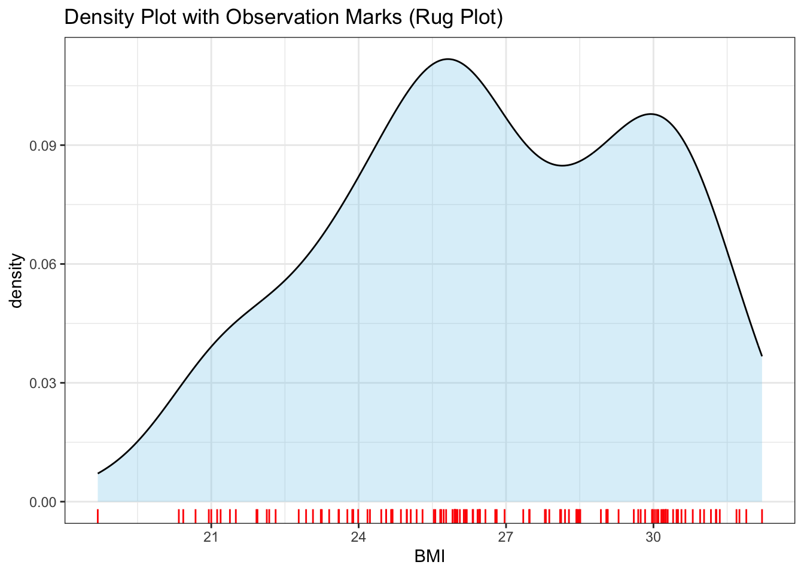
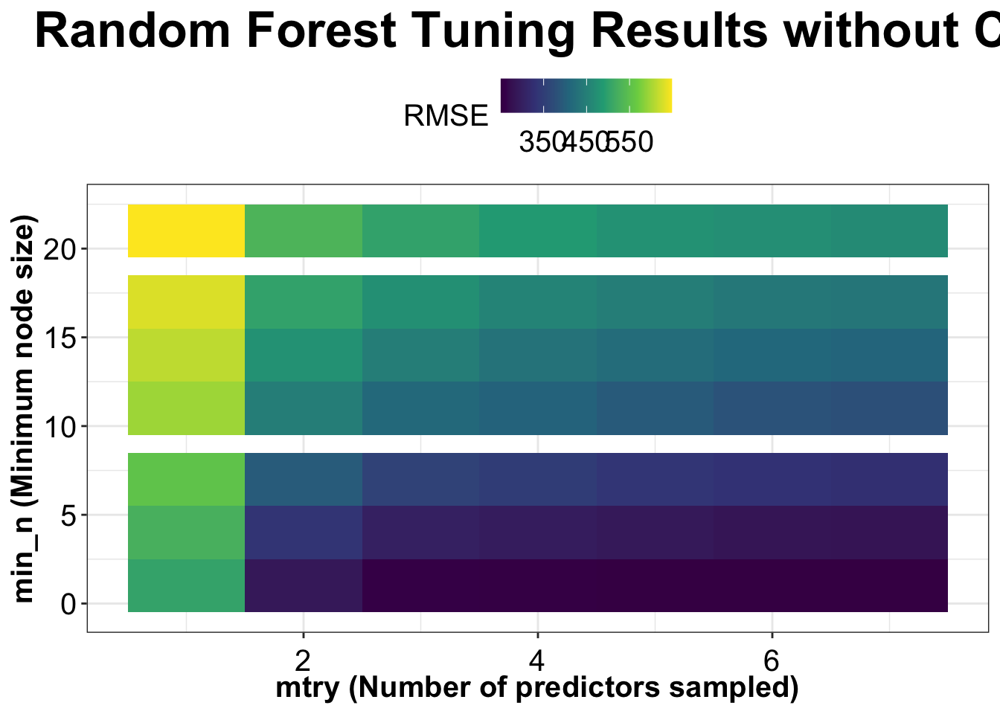
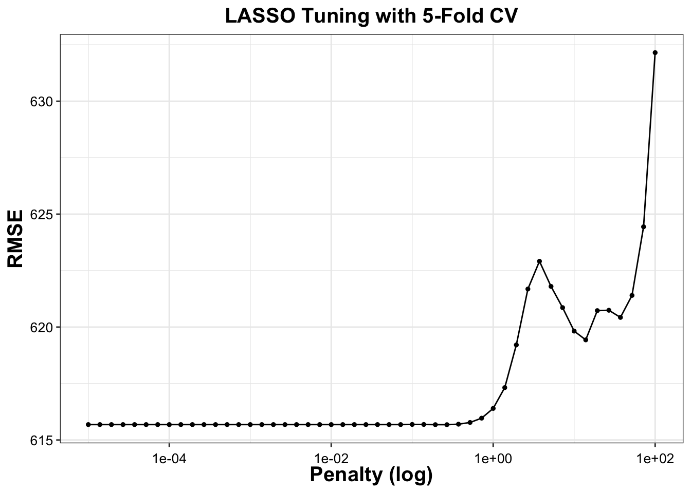

The maximum correlation that we can observe is 0.6, between height and weight. So collinearity is not much problem for us.
Feature engineering
We will assume that weight is in (kg) and height is in (meters). Although the weight is mostly around 70- 90 kg, we will assume this to be normal.
data <- data %>%mutate(BMI = WT/(HT^2))
Unit of BMI: kg per meter squared
library(ggplot2)# Density plot with semi-transparent fillggplot(data, aes(x = BMI)) +geom_density(fill ="skyblue", alpha =0.3) +# Density curvegeom_rug(aes(x = BMI), color ="red") +# Add "rug" marks for observationslabs(title ="Density Plot with Observation Marks (Rug Plot)") +theme_bw()

The density plot of BMI shows that it is somewhat normally distributed as expected although somewhat skewed. Our new variable therefore seems practical.
Model building
We will now build three models:
Linear regression
LASSO regression
Random Forest
Linear Regression
Here, we will focus on Linear Regression.
# First, we will define the recipercp <-recipe(Y ~ ., data = data) # defining modellm_model <-linear_reg() %>%set_engine("lm") %>%set_mode("regression")#workflowlm_wf <-workflow() %>%add_recipe(rcp) %>%add_model(lm_model)#model fittinglm_fit <-fit(lm_wf, data)# generating predictionspred_data <-predict(lm_fit, new_data = data) %>%# Store predictionsbind_cols(data %>%select(Y)) %>%# binding true valuesrename(.pred = .pred, truth = Y) #calculate metricslm_metrics <-metrics(pred_data, truth = truth, estimate = .pred)print(lm_metrics)
# A tibble: 3 × 3
.metric .estimator .estimate
<chr> <chr> <dbl>
1 rmse standard 581.
2 rsq standard 0.631
3 mae standard 456.
The RMSE value for Linear Regression is 581.42
Now, lets observe how the Linear regression line fits the data.
# plotting ggplot(pred_data, aes(x = truth, y = .pred)) +geom_point(color ="darkblue", alpha =0.7) +geom_abline(slope =1, linetype ="dashed", color ="red") +labs(title ="Observed vs Predicted Values") +theme_bw()
The Linear model fits the data well but we can still see that the datapoints are far from the 45 degree line in general.
# A tibble: 3 × 3
.metric .estimator .estimate
<chr> <chr> <dbl>
1 rmse standard 581.
2 rsq standard 0.631
3 mae standard 455.
The RMSE value for the LASSO Model is 581.47 This is similar to the results observed for the Linear Model.
Now, we will observe how the original and predicted values are distributed for LASSO MODEL.
# Plot Observed vs Predicted Valuesggplot(pred_data, aes(x = truth, y = .pred)) +geom_point(color ="orange", alpha =0.7) +geom_abline(slope =1, linetype ="dashed", color ="red") +labs(title ="Observed vs Predicted Values (GLMNET Model)",x ="Observed Values (Truth)",y ="Predicted Values") +theme_bw()
The datapoints are still far away from the 45-degree line as observed in Linear Regression Model. This maybe because the linear regression model already consists of relevant predictors, or the penalty value is too small to shrink the coefficients to zero.
# A tibble: 3 × 3
.metric .estimator .estimate
<chr> <chr> <dbl>
1 rmse standard 359.
2 rsq standard 0.902
3 mae standard 279.
# getting the predicted valuespred_model3 <-predict(model3, data) %>%bind_cols(data["Y"])colnames(pred_model3) <-c("pred", "Y")
We can observe that the RMSE value has dropped to 362, which is a great improvement from the previous RMSE=581 in both the other models. We can say that the random forest model has performed better than the LASSO Model and the Linear Regression model.
Now, lets observe the distribution of predicted values and original values for Random Forest model.
# Random Forest Plot ggplot(pred_model3, aes(x = Y, y = pred)) +geom_point(color ="darkgreen", alpha =0.7) +geom_abline(slope =1, linetype ="dashed", color ="red") +labs(title ="Random Forest: Observed vs Predicted Values",x ="Observed Value", y ="Predicted Value") +theme_bw() +theme(plot.title =element_text(size =14, face ="bold"),axis.title =element_text(size =12),axis.text =element_text(size =10) )
Here, it is clearly visible that the space between the datapoints and the 45-degree line has greatly reduced and the datapoints now lie very close to the line which implies that our prediction are more or less close to the original value. Hence, ramndom forest is a bettr model.
Tuning without CV
Here, we will fit the model to the same data without cross-validation.
Tuning Linear Regression without CV
# converting SEX to numeric as requireddata_numeric <- data %>%mutate(SEX =as.numeric(as.character(SEX)))#creating new recipe for the numeric datarcp_numeric <-recipe(Y ~ ., data = data_numeric)#defining parameter grid ls_grid <-tibble(penalty =10^seq(-5, 2, length.out =50))ls_tune <-linear_reg(penalty =tune()) %>%set_engine("glmnet") %>%set_mode("regression")# creating workflowls_wf <-workflow() %>%add_model(ls_tune) %>%add_recipe(rcp_numeric)# tuningls_tune_result <- ls_wf %>%tune_grid(resamples =apparent(data_numeric),grid = ls_grid,metrics =metric_set(rmse) # )#extracting the metricsls_tune_metrics <-as.data.frame(ls_tune_result$.metrics)# plotting using ggplotggplot(ls_tune_metrics, aes(x = penalty, y = .estimate)) +geom_line(linewidth =1, color ="blue") +scale_x_log10() +labs(x ="Log(penalty)", y ="RMSE") +theme_bw() +theme(axis.title.x =element_text(size =15, color ="black", face ="bold"),axis.title.y =element_text(size =15, color ="black", face ="bold"),axis.text.x =element_text(color ="black", size =20, vjust =0),axis.text.y =element_text(color ="black", size =20, hjust =1),legend.position ="top",legend.title =element_text(size =15),legend.text =element_text(size =14, vjust =0) )
We can observe that, as the penalty value is increased, the RMSE value shoots upward in a sharp way. This might be because as more as the predictor variable present in the model are penalized and perhaps maybe dropped, the model loses the power of explaining the dependent variables and the errors increase.
At the lowest penalty, the RMSE is the same as RMSE of the linear model. As penalty term is more closer to zero, LASSO becomes more similar to OLS which gives the gives the lowest possible RMSE on the training data.
Tuning Random Forest without CV
Now, we will tune RANDOM FOREST model without CV.
# setting rngseed again to avoid errorsrngseed <-1234set.seed(rngseed)# preparing data with SEX as factor as required for rangerdata_rf <- data %>%mutate(SEX =factor(SEX)) %>%# converting SEX to factormutate(across(c(DOSE, HT, WT, AGE, BMI), as.numeric)) # other vars are numeric# creating simple recipe again :( rcp_rf <-recipe(Y ~ ., data = data_rf)#defining parameter gridrf_grid <-grid_regular(mtry(range =c(1, 7)),min_n(range =c(1, 21)),levels =7)#Random Forest model setuprf_model <-rand_forest(mtry =tune(),min_n =tune(),trees =300) %>%set_engine("ranger", seed = rngseed,importance ="none") %>%# Remove if you want importanceset_mode("regression")#workflowrf_wf <-workflow() %>%add_model(rf_model) %>%add_recipe(rcp_rf)#tuning with apparent resamplingrf_tune_result <- rf_wf %>%tune_grid(resamples =apparent(data_rf),grid = rf_grid,metrics =metric_set(rmse),control =control_grid(verbose =FALSE) # dont shows progress )#extracting metricsrf_tune_result_df <- rf_tune_result %>%select(.metrics) %>%unnest(.metrics) %>%filter(.metric =="rmse")#creating heatmap plotggplot(rf_tune_result_df, aes(x = mtry, y = min_n, fill = .estimate)) +geom_tile() +scale_fill_viridis_c(name ="RMSE") +labs(x ="mtry (Number of predictors sampled)",y ="min_n (Minimum node size)",title ="Random Forest Tuning Results without CV" ) +theme_bw() +theme(axis.title.x =element_text(size =15, color ="black", face ="bold"),axis.title.y =element_text(size =15, color ="black", face ="bold"),axis.text.x =element_text(color ="black", size =15, vjust =0),axis.text.y =element_text(color ="black", size =15, hjust =1),legend.position ="top",legend.title =element_text(size =15),legend.text =element_text(size =15, vjust =0),plot.title =element_text(size =25, face ="bold", hjust =0.5) )

Here, we can observe that “low- number of predictor sampled” results in an increase of RMSE value across all minimum node sizes. Also, if we increase the minimum node sizes within a particular number of predictors sampled, the RMSE increases. This implies that more number of predictors and smaller values for minimum nodes give better performing results.
Tuning with cross validation
Now, we will perform tuning using cross-validation approach.
Random Forest model with CV
Here, we will look at the random forest model tuning with cross-validation.
#setting random seed which is basically "rngseed"set.seed(1234)# converting SEX to factordata_rf <- data %>%mutate(SEX =factor(SEX))#creating recipe for RF rcp_rf <-recipe(Y ~ ., data = data_rf)#parameter gridrf_grid <-grid_regular(mtry(range =c(1, 7)),min_n(range =c(1, 21)),levels =7)#Random Forest model setuprf_model <-rand_forest(mtry =tune(),min_n =tune(),trees =300) %>%set_engine("ranger", seed =1234) %>%set_mode("regression")# workflowrf_wf <-workflow() %>%add_model(rf_model) %>%add_recipe(rcp_rf)# 5-fold CVdata_cv <-vfold_cv(data_rf, v =5)# tuning with CVrf_tune_result <- rf_wf %>%tune_grid(resamples = data_cv,grid = rf_grid,metrics =metric_set(rmse) )# autoplot for RF modelautoplot(rf_tune_result) +labs(title ="Random Forest Tuning (5-Fold CV)",x ="mtry",y ="min_n",fill ="RMSE" ) +theme_bw() +theme(axis.title.x =element_text(size =15, color ="black", face ="bold"),axis.title.y =element_text(size =15, color ="black", face ="bold"),axis.text.x =element_text(color ="black", size =10, vjust =0),axis.text.y =element_text(color ="black", size =10, hjust =1),legend.position ="top",legend.title =element_text(size =10),legend.text =element_text(size =18, vjust =0),plot.title =element_text(size =15, face ="bold", hjust =0.5) ) +scale_fill_viridis_c()
Ignoring unknown labels:
• fill : "RMSE"
We can observe that across all minimum node sizes the RMSE drops as we increse the number of predictors. The individual perfrmance however is varying across the combinations.
Tuning LASSO Regression using CV
First, we will look at the LASSO Regression.
#converting SEX to numericdata_numeric <- data %>%mutate(SEX =as.numeric(as.character(SEX)))#defining recipercp_numeric <-recipe(Y ~ ., data = data_numeric)#defining parameter gridls_grid <-tibble(penalty =10^seq(-5, 2, length.out =50))# setting up LASSO modells_tune <-linear_reg(penalty =tune(), mixture =1) %>%set_engine("glmnet") %>%set_mode("regression")#workflowls_wf <-workflow() %>%add_model(ls_tune) %>%add_recipe(rcp_numeric)#5-fold CV with 5 repeatsdata_cv <-vfold_cv(data_numeric, v =5, repeats =5)# tuning with CVls_tune_result_cv <- ls_wf %>%tune_grid(resamples = data_cv,grid = ls_grid,metrics =metric_set(rmse) )autoplot(ls_tune_result_cv) +scale_x_log10() +labs(title ="LASSO Tuning with 5-Fold CV",x ="Penalty (log)",y ="RMSE" ) +theme_bw() +theme(axis.title.x =element_text(size =15, color ="black", face ="bold"),axis.title.y =element_text(size =15, color ="black", face ="bold"),axis.text.x =element_text(color ="black", size =10, vjust =0),axis.text.y =element_text(color ="black", size =10, hjust =1),legend.position ="top",legend.title =element_text(size =10),legend.text =element_text(size =18, vjust =0),plot.title =element_text(size =15, face ="bold", hjust =0.5) )
Scale for x is already present.
Adding another scale for x, which will replace the existing scale.

We can observe that, even with CV, we get a similar result that we observed without CV. The RMSE value shows a sharp rise as the penalty is increased. But, the lowest RMSE value achieved has now increased to over 615. This might be because we are using different data using CV compared to fitting the same data repeatedly in our earlier method
As, LASSO has a lower RMSE, it should be considered as a better model